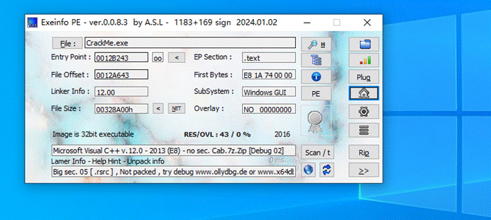
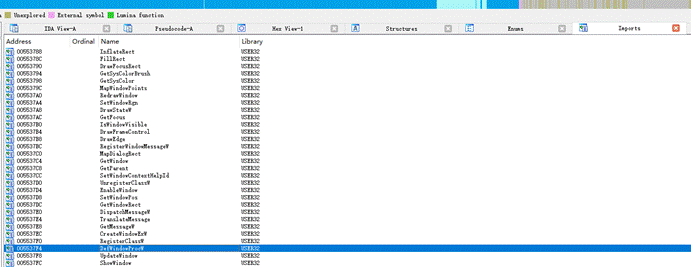
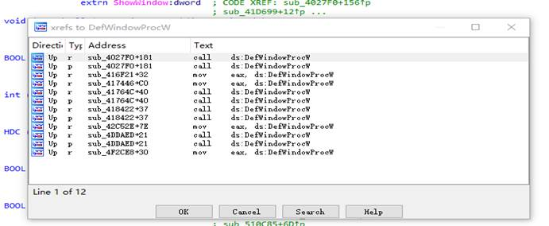
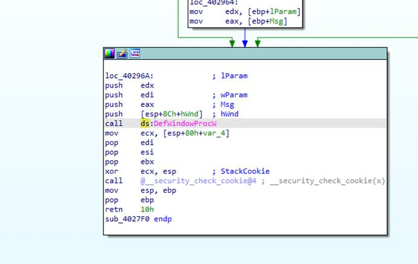
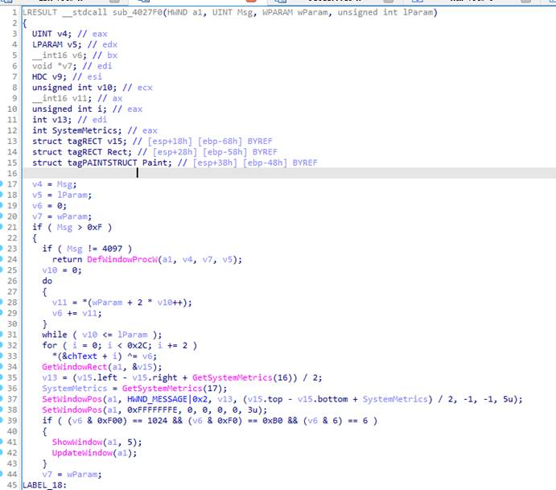
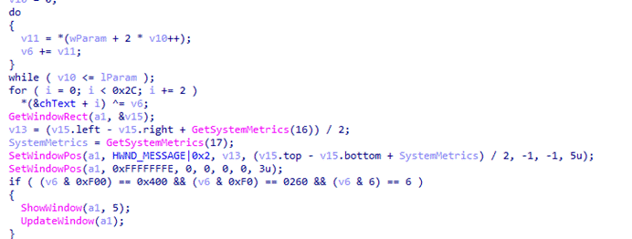
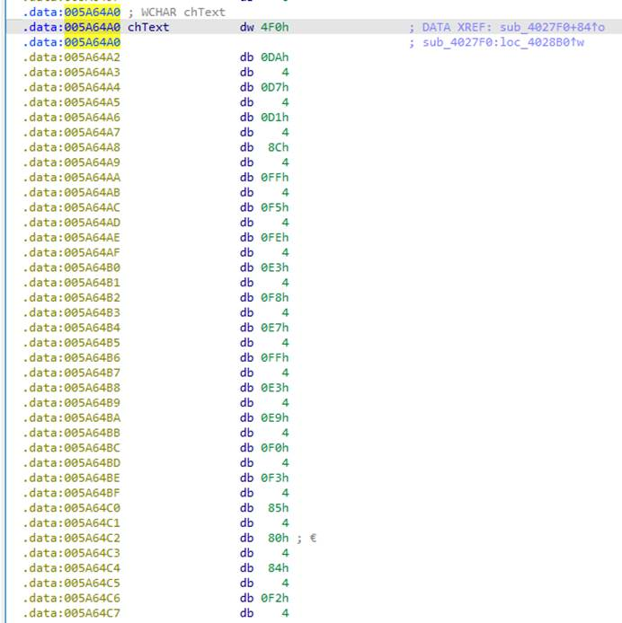
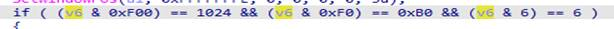
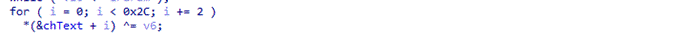
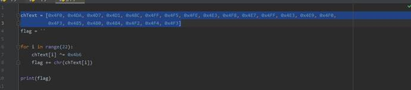

Step 1: 打开程序
这是一个 32 位无壳的 CrackMe 程序。直接丢进 IDA 进行分析。

Step 2: 分析 API
从题目描述可知，该 CrackMe 使用了以下 Windows API：MessageBox、ShowWindow、DefWindowProc。

在 IDA 的 Imports 窗口中定位到 DefWindowProc，双击进入，然后按 Ctrl + X 查看交叉引用。

交叉引用结果指向窗口过程函数（WindowProc），双击进入该函数。

Step 3: 找到核心代码
进入窗口过程函数后，按 F5 反编译，得到伪代码。

分析代码逻辑，定位到两个关键变量：v6 和 chText。

Step 4: 分析数据
通过分析伪代码可知，chText 数组中存储了比较数据，前 0x2c 个字节按两个十六进制数为一组，共 22 组：

chText = [
0x4F0, 0x4DA, 0x4D7, 0x4D1, 0x48C,
0x4FF, 0x4F5, 0x4FE, 0x4E3, 0x4F8,
0x4E7, 0x4FF, 0x4E3, 0x4E9, 0x4F0,
0x4F3, 0x485, 0x480, 0x484, 0x4F2,
0x4F4, 0x4F3
]核心运算逻辑中，关键常量 v6 = 0x4B6。通过逆向分析可知，flag 的每个字符由 chText[i] ^ v6 得到。

Step 5: 写脚本
编写 Python 脚本求解 flag：

chText = [
0x4F0, 0x4DA, 0x4D7, 0x4D1, 0x48C,
0x4FF, 0x4F5, 0x4FE, 0x4E3, 0x4F8,
0x4E7, 0x4FF, 0x4E3, 0x4E9, 0x4F0,
0x4F3, 0x485, 0x480, 0x484, 0x4F2,
0x4F4, 0x4F3
]
v6 = 0x4B6
flag = ''.join(chr(c ^ v6) for c in chText)
print(flag)运行脚本即可得到 flag。

Flag
Flag:ICHUNQIU_FE362DBE